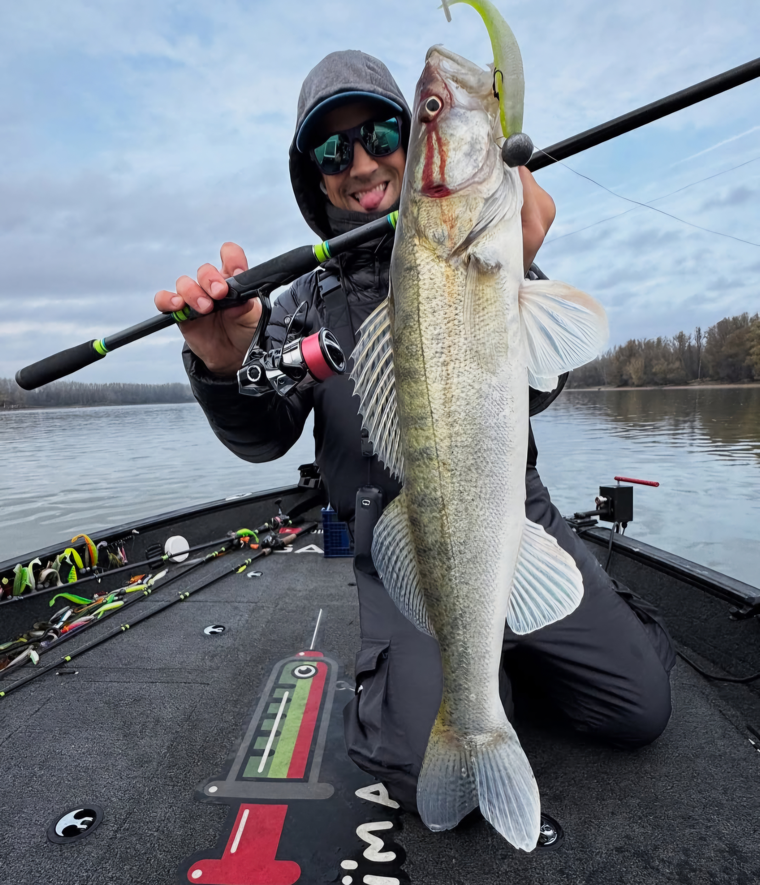
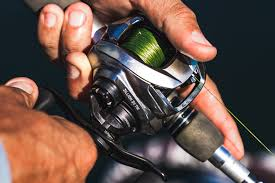

<main>
        <section id="despre-noi">
            <hgroup>
                <h2>Bine ați venit la Magazinul Teo Pescarul</h2>
                <p>Locul unde calitatea întâlnește performanța în pescuitul la pesti răpitori.</p>
            </hgroup>

            <article>
                <h3>Misiunea Noastră</h3>
                <p>Ca pescari noi înșine, vrem să vă oferim servicii și produse de cea mai bună calitate, la prețuri
                    corecte!</p>
                <p><strong>Atenție!</strong> Sezonul la știucă a început! Verificați stocurile de <b>năluci</b>. Am
                    actualizat prețurile la transport: <s>25 RON</s> <ins>15 RON</ins> pentru comenzi sub 300 lei.
                    Promovăm pescuitul sportiv de tip <i>catch and release</i> (prinde și eliberează) pentru a proteja
                    populația de <b>răpitori</b>.</p>

                <blockquote>
                    "Pescuitul este de trei ori frumos. Pestele, peisajul si tehnica de pescuit sunt deopotriva
                    frumoase. ~ Intro al emisiunii Natura si Aventura, inspirat din scrierile lui Ionel Pop"
                </blockquote>
            </article>

            <section id="bonus-harta">
                <h3>Cei mai buni pescari folosesc cele mai bune echipamente</h3>
                <p>Dă click pe <b>nalucă</b>, <b>mulinetă</b> sau <b>cotorul lansetei</b> pentru a vedea pozele de
                    catalog:</p>

                

                <map name="pescar-map">
                    <area shape="circle" coords="400, 75, 55" href="./resurse/imagini/naluca_map.jpg" alt="Naluca"
                        title="Vezi Naluca" target="_blank">

                    <area shape="circle" coords="230, 280, 55" href="./resurse/imagini/mulineta_map.jpg" alt="Mulineta"
                        title="Vezi Mulineta" target="_blank">

                    <area shape="circle" coords="90, 280, 55" href="./resurse/imagini/lanseta_map.jpg" alt="Lanseta"
                        title="Vezi Lanseta" target="_blank">
                </map>
            </section>

            <section id="evenimente">
                <h2>Evenimente și Concursuri</h2>
                <ul>
                    <li><time datetime="2025-04-15T08:00">15 Aprilie, ora 08:00</time> - <b>Cupa Bibanul de Aur</b>:
                        Concurs
                        amical pe Lacul Morii.</li>
                    <li><time datetime="2025-05-01T10:00">1 Mai, ora 10:00</time> - <b>Testare Lansete</b>: Vino să
                        testezi
                        noile <b>lansete</b> de <b>spinning</b> din carbon.</li>
                    <li><time datetime="2025-06-10T09:00">10 Iunie, ora 09:00</time> - <b>Lansare Mulinete Noi</b>:
                        Prezentare echipamente de casting.</li>
                </ul>
            </section>

            <section id="echipamente">
                <h2>Echipamente Recomandate</h2>

                <div style="display: flex; gap: 20px; flex-wrap: wrap;">
                    <figure>
                        
                        <figcaption>Mulineta durabilă pentru<br>pescuit heavy duty.</figcaption>
                    </figure>

                    <figure>
                        
                        <figcaption>Mulineta premium<br>de finețe.</figcaption>
                    </figure>
                </div>

                <h3>Catalogul oficial Daiwa Romania 2026 PDF</h3>
                <object data="./resurse/documente/catalog.pdf" type="application/pdf" width="600" height="840">
                    <p>Browserul tău nu suportă PDF. <a href="./resurse/documente/catalog.pdf">Download PDF</a>.</p>
                </object>

                <p>Mare atentie la perioadele deprohibitie de anul acesta: <a href="./resurse/imagini/prohibitie.png"
                        download="prohibitie2026.png">Perioadele de prohibitie 2026 (Imagine)</a>.</p>
            </section>

            <section id="video-utile">
                <h2>Materiale video realizate de expertul nostru Teo</h2>
                <div>
                    <a href="https://www.youtube.com/embed/NWbM_pMqUW0" target="ifr-video">Pescuit in Irlanda 2025</a> |
                    <a href="https://www.youtube.com/embed/UjGJzryHf6I" target="ifr-video">Pescuit la cernavoda (test
                        lanseta Pontoon21 GAD Harrier)</a> |
                    <a href="https://www.youtube.com/embed/rVuoe97uH8o" target="ifr-video">Emisiune Natura si
                        Aventura</a>
                </div>
                <br>
                <iframe width="560" height="315" src="https://www.youtube.com/embed/NWbM_pMqUW0" name="ifr-video"
                    title="YouTube video player" allowfullscreen></iframe>

                <h3>Bonus: Ponturi de pescuit de la campionul A Sava - Playlist</h3>
                <iframe width="560" height="315"
                    src="https://www.youtube.com/embed/jPZWJK_X0NM?playlist=jPZWJK_X0NM,7IS95VXN7eY,begYYox_9gs&autoplay=1&loop=1&mute=1"
                    title="Playlist Andrei Sava" allowfullscreen>
                </iframe>
            </section>

            <section id="informatii-utile">
                <h2>Întrebări Frecvente (FAQ)</h2>

                <details>
                    <summary>Cât costă livrarea pentru lansete?</summary>
                    <p>Livrarea este gratuită pentru comenzi ce depășesc suma de 300 RON, in rest se percepe o taxa de
                        25 RON. Echipamentele sunt ambalate în tuburi rigide de protecție pentru a evita orice incident
                        pe durata transportului.</p>
                </details>

                <details>
                    <summary>Ce năluci recomandați pentru știucă?</summary>
                    <p>Pentru știucă, considerată cea mai vicleană dintre răpitori, recomandăm voblerele de tip
                        <i>jerkbait</i> și oscilantele mari, culori naturale pe apă limpede și culori stridente pe apă
                        tulbure.</p>
                </details>

                <details>
                    <summary>Oferiți garanție pentru mulinetele Shimano sau Daiwa?</summary>
                    <p>Da, toate mulinetele premium beneficiază de o garanție de 24 de luni. Garanția acoperă defectele
                        de fabricație, nu și uzura normală sau utilizarea necorespunzătoare.</p>
                </details>

                <details>
                    <summary>Pot returna un produs dacă nu îmi place acțiunea lansetei?</summary>
                    <p>Desigur! Politica noastră permite returul în termen de 14 zile calendaristice, cu condiția ca
                        produsul să fie în ambalajul original și să nu prezinte urme de utilizare pe malul apei.</p>
                </details>

                <h3>Bonus: Calcul Rezistență Fir Necesară (MathML)</h3>
                <p>Deoarece portanța apei și acțiunea lansetei preiau mare parte din efort, rezistența minimă necesară a
                    firului pentru a scoate un pește de o anumită greutate se calculează astfel:</p>
                <math xmlns="http://www.w3.org/1998/Math/MathML" display="block">
                    <msub>
                        <mi>R</mi>
                        <mtext>fir</mtext>
                    </msub>
                    <mo>=</mo>
                    <mfrac>
                        <mrow>
                            <msub>
                                <mi>G</mi>
                                <mtext>pește</mtext>
                            </msub>
                            <mo>⋅</mo>
                            <msub>
                                <mi>k</mi>
                                <mtext>dinamic</mtext>
                            </msub>
                        </mrow>
                        <msub>
                            <mi>α</mi>
                            <mtext>amortizare</mtext>
                        </msub>
                    </mfrac>
                </math>
                <p><small>*Unde k este factorul de șoc (accelerația peștelui), iar α este coeficientul de absorbție al
                        lansetei.</small></p>

            </section>
    </main>